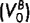
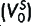
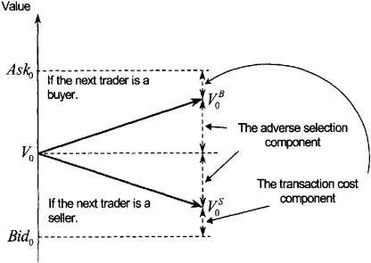
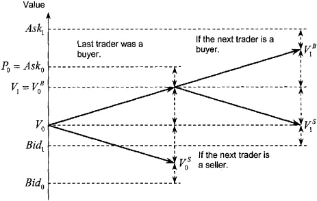
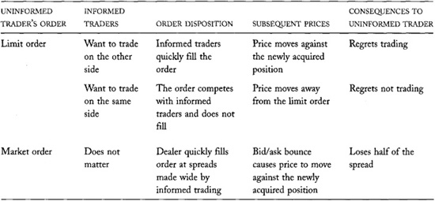
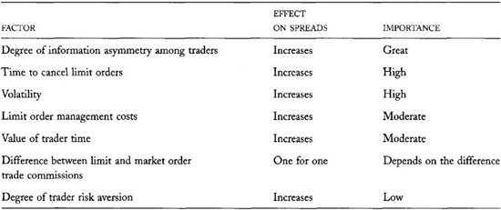

Chapter 14: Bid/Ask Spreads
The bid/ask spread is the price impatient traders pay for immediacy. Impatient traders buy at the ask price and sell at the bid price. The spread is the compensation dealers and limit order traders receive for offering immediacy.
The spread is the most important factor that traders consider when they decide whether to submit limit orders or market orders. When the spread is wide, immediacy is expensive, market order executions are costly, and limit order submission strategies are attractive. When the spread is narrow, immediacy is cheap, and market order strategies are attractive. If you are interested in optimizing your order submission strategies, you must understand what determines bid/ask spreads so that you can judge whether they are wide or narrow, given current market conditions.
The spread is also the most important factor that dealers consider when they decide whether to offer liquidity in a market. If the spread is too narrow, dealing may not be profitable and dealers may quit trading. If it is wide, dealing will be profitable and other dealers may enter the market. If you are interested in dealer profitability, you must understand the factors that determine bid/ask spreads.
In this chapter, we will consider what determines bid/ask spreads in dealer markets and in order-driven markets. We will discuss when immediacy is expensive, when it is cheap, and why. The most important factors that determine spreads are adverse selection due to well-informed traders, volatility, and market activity. We will closely examine these factors and many others.
The most important lesson you may learn from this book appears in this chapter. You will learn why uninformed traders lose to well-informed traders whether they submit limit orders or market orders. Uninformed traders lose simply because they trade. If you are an uninformed trader and do not want to lose, you should minimize your trading.
14.1 DEALER BID/ASK SPREADS
Dealers set their spreads to maximize their profits. Their spreads must be wide enough to allow them to recover their costs of doing business. Otherwise, they will not be profitable, and they will quit dealing. Their spreads cannot be so wide, however, that no one will trade with them. Their revenues then would not cover their expenses.
Dealers profit when their revenues exceed their expenses. Dealer revenues depend on the effective spreads they earn on their round-trip trades, on how often they can turn their inventory, and on how much they lose to informed traders. Dealer business expenses reduce their profits. These expenses include financing costs for their inventories, wages for their staff, exchange membership dues, and expenditures for telecommunications, research, trading system development, clearing and settlement, accounting, office space, utilities, and other such items.
One Dealer Does Not Necessarily a Monopolist Make
The specialists at the New York Stock Exchange are the unique dealers in their specialty stocks. Although their unique positions may give them some market power on the floor of the Exchange, they are hardly monopolists. They face competition from public limit order traders and from dealers at other exchanges that trade the same securities.
14.1.1 Monopoly Dealers
When dealers face little competition, they may quote wide spreads in order to maximize their profits. The optimal monopoly spread depends on the demand for their services. If clients are willing to trade regardless of the spread, spreads will be wide. If clients are sensitive to their transaction costs, spreads will be low.
Monopoly dealers set their spreads so that the additional revenue from a slight decrease in spread is just equal to the additional cost of providing the additional liquidity that traders will demand at the slightly lower spread. A similar result appears in all introductory economics textbooks. We will not explain it here because dealers can rarely behave as monopolists in financial or commodity markets.
Monopolies are successful only when monopolists can prevent competitors from entering their markets. In most security and contract markets, the barriers to entry that dealers face are low. Dealers always look for markets in which they can make money. If dealing profits are excessively high in some market, they will enter that market and try to participate in the excess profits. Their entry tends to lower spreads, and thereby the profits of all dealers in the market. The threat of entry therefore may prevent a dealer from behaving as a monopolist even when no other dealers are in the market.
In many markets, dealers also face competition from public limit order traders. Limit orders are essentially the same as dealer quotes. Both are offers to trade that other traders may take when they want to trade. Dealers who compete with aggressive public limit order traders cannot earn large effective spreads because the limit order traders will undercut their quotes.
14.1.2 Spreads in Competitive Dealer Markets
In competitive dealer markets, dealer spreads ultimately depend on the costs that dealers incur in running their business. The free entry and exit of dealers ensures that spreads will adjust so that dealers just earn normal profits for providing their liquidity services. When spreads are too high, so that incumbent dealers earn excessive profits, new dealers will enter the market. Their competition for order flow will cause spreads to fall. As the spreads fall, so will the excess profits. If spreads are too low, so that dealers are losing money, some will eventually quit because nobody can lose money forever. With less competition, the remaining dealers will be able to raise their spreads and thereby decrease their losses. Only when spreads are set so that dealers earn normal profits will dealers neither enter nor leave the market.
Dealers earn normal profits when their revenues just cover their total economic costs of doing business. These costs include all costs described above, a fair rate of return on their invested capital, and fair compensation for their entrepreneurial efforts. Economists call the difference between revenues and the total economic costs of doing business economic profit. When dealers earn normal profits, economic profits are zero. Firms that make normal profits have accounting profits that just cover the value of the entrepreneurs' time and the rental of their capital.
14.2 SPREAD COMPONENTS
For analytic purposes, economists break the bid/ask spread into two components. The decomposition makes it easier to understand what factors determine bid/ask spreads.
The transaction cost spread component is the part of the bid/ask spread that compensates dealers for their normal costs of doing business. We enumerated these costs above. This component also funds any monopoly profits that the dealer may make and any risk premium that dealers may require for bearing inventory risk.
The adverse selection spread component is the part of the bid/ask spread that compensates dealers for the losses they suffer when trading with well-informed traders. This component allows dealers to earn from uninformed traders what they lose to informed traders. We also discuss this component in chapter 13 when we consider how dealers learn about values from the order flow. There we examine the component from an information perspective. Here we examine it from an accounting perspective. Remarkably, although the two perspectives are quite different, they both imply the same size adverse selection spread component.
The two components taken together constitute the total spread. Dealers never quote both components separately. They simply quote their bid and ask prices. To actually estimate the two spread components, analysts must use econometric methods.
14.2.1 The Transaction Cost Component
If all traders knew instrument values with complete certainty, the transaction cost component would constitute the entire spread. Prices would simply bounce back and forth between bid prices, which would be set slightly below instrument values, and ask prices, which would be set slightly above instrument values. Competition among dealers would cause the spread to equal the normal costs of doing business. If dealers had monopoly power, they would set wider spreads.
Economists also call the transaction cost spread component the transitory spread component because price changes associated with this component are transitory. Transitory price changes regularly reverse. Price changes caused by a jump from the bid to the ask most frequently follow price changes caused by a jump from the ask to the bid. Such price changes occur when the order flow includes a mix of buyers and sellers.
Traders call the bouncing back and forth between bid and ask prices bid/ask bounce. Bid/ask bounce is a minor form of price volatility caused by impatient traders who demand immediacy. The transitory spread component is responsible for bid/ask bounce.
14.2.2 The Adverse Selection Spread Component
Since dealers do not know fundamental values well, they expose themselves to adverse selection from better-informed traders when they offer liquidity. The better-informed traders choose the side of the market on which they trade, and the dealers end up losing money to them. When some traders are better informed than other traders, traders are asymmetrically informed.
If dealers set their spreads to reflect only their normal costs of doing business, their losses to well-informed traders would eventually force them out of business. Dealers must widen their spreads further to cover their losses to informed traders. This additional widening of the spread is the adverse selection spread component. It allows dealers to recoup from uninformed traders what they lose to informed traders. By widening the spread, it also decreases dealer losses to informed traders by ensuring that informed traders trade at less attractive prices.
Economists also call the adverse selection spread component the permanent spread component. Price changes due to the adverse selection spread component are permanent in the sense that they do not systematically reverse. Subsequent price increases and decreases are equally likely. Price changes due to the adverse selection spread component reflect changes in dealers' estimates of instrument values. When dealers efficiently use all information available to them to estimate values, the resulting sequence of estimate revisions should be unpredictable. (If their future revisions were predictable, the dealers would not be estimating values efficiently: They should have incorporated information upon which any predictable revision could be based in their earlier estimates.) A process with unpredictable changes is essentially a random walk. Every change in a random walk is permanent in the sense that it affects the levels of all subsequent values of the random walk.
14.2.3 Two Explanations for the Adverse Selection Component
The adverse selection spread component has two aspects. From an information perspective (see chapter 13), it is the difference in the value estimates that dealers make conditional on the next trader being a buyer or a seller. From an accounting perspective, it is the portion of the bid/ask spread that dealers must quote to recover from uninformed traders what they expect to lose to informed traders.
Remarkably, these two perspectives imply the same size for the adverse selection spread component. A simple proof of this result, known as the Glosten-Milgrom theorem, appears in the appendix to this chapter. You can easily understand the result by considering what determines the adverse selection component from both perspectives. To simplify our discussion, assume that dealers know exactly what values are if informed traders are trading. (Our result does not depend on this assumption.) The dealers, however, do not know when informed traders are trading.
From the information perspective, the adverse selection spread component is the amount that dealers should update their estimates of value when they learn whether the next trader is a buyer or a seller. If a dealer trades with a known uninformed trader, the dealer learns nothing and his estimate of value should remain the same. If the dealer trades with a known informed trader, the dealer should adjust his bid and offer to reflect the proper value of the instrument. This adjustment is the dealer's pricing error, the difference between the proper value of the instrument and the dealer's original estimate of its value. Since the dealer does not know which clients are well informed and which are uninformed, the dealer must adjust his estimate of value partially following every trade. In particular, he will discount the pricing error by the probability that his next client is well informed. From the information perspective, the adverse selection spread component thus is the product of the pricing error (assuming that the trader is informed) times the probability of trading with an informed trader.
From the accounting perspective, the adverse selection spread component is the amount that dealers should charge all their clients to recover their losses to informed traders. In our simple analysis, assume the dealer loses the difference between his original estimate of value, and the proper value, when he trades with an informed trader. Since the dealer incurs this loss only when he trades with a well-informed trader, the average loss per trade to informed traders is the loss from trading with an informed trader times the probability of trading with an informed trader. This average loss is the adverse selection spread component.
The Total Spread
Figures 14-1 and 14-2 illustrate the conceptual process by which dealers set and adjust their spreads. If charts intimidate you, skip them. The figures represent the same information presented in the text.
Figure 14-1 shows that the total spread is the sum of the two spread components. In principle, a dealer derives her bid and ask prices as follows:
• She first estimates the instrument value, using all information currently available to her. This estimate, V~0~ in the figure, is the basis for her quoted bid and ask prices. It determines the level of her price quotes.
• Using this basis, she then estimates values, assuming that the next trader is a buyer

or a seller
. The difference between these two estimates is the adverse selection spread component. If the probabilities of trading with informed buyers and sellers are equal, and if the expected pricing errors in both instances are equal, the two value estimates will be equally distant from her initial estimate, V~0~. She then simply adds and subtracts half of the adverse selection spread component to V~0~ to obtain them.• She obtains her offer price by adding half of the transaction cost spread component to her value estimate for a buyer. She likewise obtains her bid price by subtracting half of the transaction cost spread component from her value estimate for a seller.
In practice, dealers set their bid and ask prices by using their experience to interpret current market conditions. Although they rarely form their estimates as described here, they regularly consider the issues discussed here.
When the next trader arrives, the dealer learns whether she wants to buy or sell. If the dealer learns nothing more about the trader or about values, the dealer's new unconditional value estimate will be the appropriate previous conditional value estimate.
Figure 14-2 illustrates the quotation adjustments following the arrival of a buyer (P~O~ = Ask~0~). The bid and ask both rise by half of the adverse
FIGURE 14-1.\ The Components of the Total Spread

FIGURE 14-2.\ Quotation Adjustments After a Buyer Arrives

These two expressions for the adverse selection spread component are the same if the loss from trading with an informed trader is the same as the pricing error when trading with an informed trader. This is true if dealers cannot restore their target inventories before prices change to reflect the informed traders' information.
If dealers can restore their target inventories, the result still holds with a caveat. If dealers do not recognize that they have traded with an informed trader, they will not fully adjust prices. Informed traders therefore will trade with them again. Dealers will continue losing until the price reflects the informed traders' information. Their cumulative losses will equal their original pricing error, so the Glosten-Milgrom theorem still holds.
If dealers do recognize that they have traded with an informed trader, but others in the market have not, they may be able to trade on the side that the information favors. They then will act as speculators rather than as dealers. They will be eager to trade on the informed side but unwilling to offer liquidity on the other side. We can restate the Glosten-Milgrom theorem to include this situation, but the restatement is beyond the scope of this book.
14.2.4 Discriminating Between the Two Spread Components
Econometricians have estimated the two components of the bid/ask spread so that we can determine their relative importance. The decomposition is possible because the two components give prices different statistical properties. The transaction cost spread component causes prices to bounce back and forth between bid and offer prices. The adverse selection spread component causes unpredictable price changes that have the properties of a random walk. In both cases, the price changes depend on whether a buyer or a seller initiated the transaction.
The most common decomposition method involves the estimation of an equation to explain current and future price changes using information about whether each trade was buyer- or seller-initiated. These analyses indicate that in most markets the adverse selection spread component accounts for more of the total spread than does the transaction cost spread component.
14.3 ADVERSE SELECTION AND UNINFORMED TRADERS: THE MOST IMPORTANT LESSON IN THIS BOOK FOR MOST READERS
Adverse selection explains why uninformed traders lose to informed traders, regardless of whether they trade with limit or market orders. In both cases, they suffer the effects of adverse selection.
When uninformed traders use limit orders, their orders fill quickly if they overprice their bids or underprice their offers. Informed traders then eagerly trade with them, and the uninformed traders ultimately will regret trading. In this case, uninformed traders directly suffer the effects of adverse selection, just as dealers do.
When limit order traders and informed traders compete to trade on the same side of the market, their limit orders often do not fill. Since informed traders tend to forecast future price changes correctly, prices often will move away from the limit orders, and the uninformed traders will regret not trading. In this case, adverse selection causes uninformed traders to lose profitable trading opportunities.
Uninformed traders thus often regret using limit orders. When they trade with informed traders, they regret trading. When they compete with informed traders to fill their orders, they often do not fill, and they regret not trading.
Uninformed traders who use market orders ensure that they trade, but they still suffer the effects of adverse selection. Since dealers widen their spreads to recover from uninformed traders what they lose to informed traders, uninformed market order traders trade at wider bid/ask spreads than they would if there were no informed trading. In effect, the adverse selection spread is a fee that dealers charge market order traders for bearing adverse selection risk.
Uninformed traders do not lose because they systematically want to trade on the wrong side. Even if they flip a coin to decide on which side to trade, uninformed traders tend to lose. A fair coin ensures that they will be right about future price changes half the time, but the costs of filling their orders will cause them to lose on average.
Uninformed traders thus ultimately lose to informed traders regardless of how they trade. They lose simply because they trade. They can avoid the problem only by not trading. Table 14-1 summarizes why uninformed traders lose when trading.
14.4 EQUILIBRIUM SPREADS IN CONTINUOUS ORDER-DRIVEN AUCTION MARKETS
Continuous order-driven auction markets arrange trades when they match an arriving market order (or marketable limit order) with a standing limit order. Traders who use these markets must decide whether to offer liquidity by submitting limit orders or to take liquidity with market orders.
TABLE 14-1.\ Uninformed Traders Tend to Lose to Informed Traders Regardless of How They Trade

Chapter 4 discusses limit and market order properties in detail. Briefly, market order traders get immediate executions, but they pay the bid/ask spread to trade. Limit order traders get good prices if their orders execute, but they risk failing to trade if the market moves away from their orders. If they fail to trade and still wish to trade, they must replace their limit orders with more aggressively priced orders. In the end, they may trade at much worse prices than they would have received had they initially used market orders.
The bid/ask spread determines how attractive limit and market order trading strategies are. If the spread is wide, market orders will be expensive, and no one will use them. If the spread is narrow, market orders may be more attractive than limit orders.
This section describes how traders decide which type of order to use. We must understand their decisions in order to identify the determinants of bid/ask spreads in auction markets.
We will consider the problem by first analyzing a simple, but very unrealistic, situation in which we can easily predict how traders will behave. Once we understand that situation, we will be better able to analyze more interesting and realistic situations. The foundation for our analysis appears in a paper about equilibrium spreads by Kalman Cohen, Steven Maier, Robert Schwartz, and David Whitcomb.
14.4.1 A Simple Equilibrium Spread Analysis
Suppose that all traders in a continuous order-driven public auction are essentially the same. They all want to trade the same sizes, and no one is better informed than anyone else. No one is risk averse, no one values his or her time at all, and no one is in any hurry to trade. Everyone knows values instantaneously as they change, but no one can forecast changes in those values. In addition, everyone can submit and cancel orders instantaneously without any cost, and their trading commissions do not depend on order type. Our traders differ from each other only in that some want to buy and some want to sell. These traders are clearly like none that we will ever meet!
These extraordinarily unrealistic assumptions have two equally unrealistic implications. First, when deciding which type of order submission strategy to pursue, the traders care only about their expected trading costs. We explicitly assumed that they do not care about the value of their time, when they trade, or the risk of their strategies.
Second, when each trade takes place, the price will equal the current instrument value. Limit order traders will constantly adjust their limit prices to reflect any changes in value. They can make these adjustments because they instantaneously know values as they change. They will make these adjustments because they can cancel and resubmit their orders without any cost. They must make these adjustments to ensure that they trade if prices move away from them and to avoid trading at a loss if prices move through their orders. Although the market order traders would like to trade at prices different from values, limit order traders will not allow them to do so.
The expected cost of trading a market order is half the bid/ask spread less any profits that they expect to make by carefully timing their trades. Since market order traders cannot forecast price changes, and since limit order traders will not allow them to trade at any price different from value, they cannot expect to profit from timing their orders. The expected costs of trading a market order therefore will be exactly half the bid/ask spread.
We now introduce a very simple principle to obtain our results about bid/ask spreads. Since our imaginary traders can choose whether to submit limit orders or market orders and since they are all essentially identical, the spread must make both strategies equally attractive. Otherwise, every trader would want to use the more attractive strategy. If the spread is too narrow, everyone will want to use market orders, and no one will trade. If the spread is too wide, everyone will want to use limit orders, and no one will trade. The spread which ensures that traders are indifferent between using a limit order and a market order is the equilibrium spread. The traders discover the equilibrium spread through the following mechanism.
If most traders try to use market orders so that few traders use limit orders, the few limit order traders will set their limit prices far from the market. They do not need to be aggressive because the surplus of market orders ensures that they will trade. The resulting wide spreads, however, will discourage market order traders. Some will choose to submit limit orders instead. With more competition to supply liquidity, limit order traders will have to set their limit prices closer to the market, and spreads will narrow.
Conversely, if most traders use limit orders and few traders use market orders, bid/ask spreads will be small as limit order traders compete to trade with the few market order traders. The narrow spread will encourage some limit order traders to submit market orders instead. The reduced competition among the limit order traders will cause bid/ask spreads to widen.
In summary, spreads that are too wide cause traders to switch from market orders to limit orders and thereby narrow the spread. Spreads that are too narrow cause traders to switch from limit orders to market orders and thereby widen the spread. At some intermediate spread, traders are indifferent between submitting limit orders and market orders. This spread is the equilibrium spread.
With this principle, we can now determine that bid/ask spreads in this rather unusual market must be zero! Since the traders care only about their expected transaction costs, the equilibrium expected costs of using market and limit order strategies must be the same. Because trading is a zero-sum game, expected transaction costs to limit order traders are exactly equal to expected trading profits to market order traders and vice versa. To be equal, the expected costs of both order types therefore must be zero. Since the expected cost of the market order strategy is half the bid/ask spread, the bid/ask spread in this highly unrealistic model must be zero.
Economists and Their Can Openers
Economists often make highly unrealistic assumptions to simplify their analyses. Many people poke fun at economists for their propensity to create impossibly abstract models.
You may know the joke about the three hungry castaways on a deserted island who are trying to open a can of food. The chemist suggests heating the can until it bursts. The engineer proposes breaking it open with a sharp rock. The economist suggests, "Assume we have a can opener. ..." The joke is unfair, but it reflects the discomfort people feel about many abstract economic models.
Economists make unrealistic assumptions when analyzing issues to ensure that they can create a simple situation (model) that they fully understand. They then consider what happens to their results when they replace the unrealistic assumptions with more realistic ones. This method allows economists to thoroughly understand complex situations that might otherwise elude them. It is especially useful for identifying the importance of the issues that affect the results. By starting with simple assumptions, economists can open many complex problems.
Market Manipulation of Quoted Spreads
Markets that wish to lower their quoted spreads can charge commissions only on market and marketable limit orders. If the commissions are proportional to the quantity traded, spreads will drop by exactly the difference between the limit and market order commissions. In equilibrium, this change would have no effect on order submission strategies or trader profitability.
In practice, markets can undertake this strategy only if they can control the commissions that all buyers and sellers pay. If a single broker within a multibroker market tried to raise the commissions on market orders and lower them on limit orders, traders would send only limit orders to that broker, and he would lose revenue. Only brokers who run their own markets and only exchanges that can regulate commissions can manipulate quoted spreads.
Cantor Fitzgerald organizes government bond markets for its customers through its eSpeed subsidiary. Since Cantor Fitzgerald charges commissions only on market orders, spreads in its markets are smaller than they would be if it evenly distributed the commissions between the limit order traders and the market order traders.
Some ECNs like Archipelago also charge different fees for market orders and limit orders. Although the fees are paid by the brokers who route orders to them, in perfectly competitive brokerage markets, the differential fees will be reflected in the commissions that traders pay for different types of executed orders.
14.4.2 More Realistic Equilibrium Spread Results
We now obtain more realistic results by relaxing some of the remarkable assumptions made above.
14.4.2.1 Differential Commissions
If limit order traders pay greater trading commissions than market order traders, limit orders will be relatively less attractive. Without some compensating differential in the spreads, no trader will submit a limit order. Since traders must be indifferent between using both order strategies in equilibrium, spreads must widen so that limit and market order traders equally share the difference in commissions. In this simple model, the cost of trading a market order is half the bid/ask spread. It must equal half the difference in the commissions to make traders indifferent between the two trading strategies. The equilibrium spread therefore must equal the difference between the two commissions.
14.4.2.2 Costly Limit Order Management
In practice, canceling and resubmitting limit orders is costly. Brokers and exchanges may charge fees for canceling orders, and traders lose the opportunity to do other things while they manage their orders. Limit order traders therefore will not continuously adjust their orders. Instead, they will adjust their orders only when values diverge significantly from their limit prices. The divergence that triggers a limit price adjustment depends on the cost of canceling and resubmitting. If these costs are large, limit order traders will adjust their limit prices infrequently.
Costly limit order management makes limit orders less attractive than market orders for two reasons. First and most obviously, limit order traders incur costs to adjust their orders that market order traders do not incur. Second and more important, limit order traders give a valuable timing option to market order traders when they do not continuously update their limit order prices. Market order traders will wait to see what happens to values before they trade. If a market order trader wants to buy, he will wait to see if value rises. If value rises past the limit price of a standing limit sell order, he will then buy at the limit price and profit by the difference. If value falls, he will wait until limit order sellers drop their prices. He then can buy at a lower price. This timing option makes market orders more attractive than limit orders.
Market order traders who exercise the timing option subject limit order traders to a form of adverse selection. When the limit order traders trade, they wish they had been able to adjust their prices. When the limit order traders do not trade, they wish that they had. In a sense, the market order traders are better informed traders than the limit order traders. When they trade, the market order traders have more current information than the information that limit order traders had at the time they set their limit prices.
The timing option is most valuable when market order traders can respond to changing conditions faster than limit order traders can. If the limit order traders can adjust their limit prices before market order traders can take advantage of changes in value, the timing option will not be valuable.
The timing option is also most valuable when few market order traders compete to take advantage of it. When many market order traders try to exercise the same timing option, they must act quickly as soon as it becomes valuable. Market order traders who wait too long will lose the option to a quicker trader.
To ensure that traders are indifferent between using limit orders and market orders, the equilibrium spread must ensure that the limit order traders are compensated for the timing options that they give to market order traders. The equilibrium spread also must ensure that the two types of traders equally share the limit order management costs. Since the spread is the total cost of using two market orders to complete a round-trip trade, the equilibrium spread must equal the expected cost of managing the limit orders plus twice the value of the timing option.
In practice, limit order traders cannot instantaneously reprice their orders exactly when repricing would be optimal. The costs of paying attention ensure that values may change substantially before they notice the change. Order entry, order routing, and order handling delays also ensure that values may change before instructions to cancel limit orders become effective. These delays make the timing option more valuable. The equilibrium spread therefore also depends on the average time it takes limit order traders to successfully cancel their orders. If the order cancellation process is slow, equilibrium spreads will be wide.
When the order cancellation process is slow, equilibrium spreads also will depend on the volatility of the instrument. The timing option will be quite valuable for volatile instruments because prices may change substantially before traders can reprice their orders. Equilibrium spreads therefore must be wider for volatile instruments than for relatively stable instruments.
A Simple Timing Option Example
Suppose the value of a contract is 20 dollars. In the next five minutes, the value may stay the same, rise by 12 cents, or fall by 12 cents. These alternatives are equally probable.
Lisbet, a limit order trader, submits a sell order with a limit price of 20 dollars.
In the next five minutes, Mark, a price-insensitive market order buyer, may arrive and trade with Lisbet. The probability that Mark arrives is one-half. This probability does not depend on the value of the contract.
Tim is an opportunistic market order buyer who monitors the market to exploit timing options. He will buy from Lisbet if the opportunity looks attractive and if the opportunity is still then available. In particular, Tim will buy if values rise and if Mark does not arrive first. The probability that value rises is one-third. The probability that Mark arrives is one-half. Since the two events are independent, the probability that Tim buys is one-sixth. If Tim buys, he will earn 12 cents because he will buy at 20 dollars a contract worth 20.12 dollars. The expected value of his trading strategy therefore is one-sixth of 12 cents, or 2 cents.
Dieter is a dealer who is always willing to buy at 6 cents below the current value of the contract. Lisbet will trade with Dieter if her order does not fill after five minutes.
Consider Lisbet's expected trade price. We will first compute it assuming that Tim is not in the market and then assuming that he is present.
Assume that the probability that Lisbet trades with Mark at 20 dollars is one-half. If Mark does not arrive (and Tim is not in the market), Lisbet then would trade with Dieter. That trade price would be 19.82 if value falls, 19.94 if value does not change, and 20.06 if value rises. Since these events are equally likely, her expected trade price if Mark does not arrive (and Tim is not in the market) is 19.94. Accordingly, Lisbet's expected trade price when Tim is not in the market is the average of 20 (if she trades with Mark) and 19.94 (if she trades with Dieter), which is 19.97 dollars.
Now suppose that Tim is in the market. If Mark does not arrive, Lisbet will trade with Dieter at 19.82 if value falls, with Dieter at 19.94 if value does not change, and with Tim at 20.00 if value rises. Since these events are equally likely, her expected trade price if Mark does not arrive, and Tim is in the market, is 19.92. If Mark arrives, Lisbet will trade with him at 20 dollars. Since the probability that Mark will arrive is one-half, Lisbet's expected trade price is 19.96 if Tim is in the market.
When Tim is present, Lisbet's expected sales price is a penny lower than it would be if Tim were not in the market. If Tim is in the market, Lisbet loses a penny because she will never trade at 20.06. Otherwise, she will trade at 20 instead of 20.06 one-sixth of the time (when value rises, and Mark arrives).
Now consider how Tim affects Dieter's profitability. If Tim is not in the market, Dieter trades if Mark does not arrive. Since Dieter always buys at 6 cents below value, Dieter expects to make 3 cents profit. If Tim is in the market, Dieter trades only if Mark does not arrive, and prices fall or stay the same. The probabilities of these two events are both one-sixth, so that Dieter expects to make 2 cents profit if Tim is in the market. When Tim is present, Dieter expects to make 1 cent less than he would make if Tim were not in the market.
Tim's two-cent expected profit therefore comes partly from the timing option that he exercises against Lisbet (1 cent) and partly from quote matching in front of Dieter's order (1 cent).
14.4.2.3 Valuable Time and Risk Aversion
When traders value their time, limit order strategies are more expensive than market order strategies because the former take longer to implement than the latter. Equilibrium spreads therefore must widen to make limit orders more attractive and market orders less attractive. When traders value their time highly, spreads must be wide.
Since the spread reflects the value of time, the spread is the price of immediacy. Traders say that market order traders buy time and limit order traders sell time.
Limit and market order strategies expose traders to different risks. Limit order traders risk having to chase the market if prices move away from their orders. Market order traders risk trading at unexpected prices. Quotes may change after they submit their orders but before they are filled. Their large orders also may have unpredictable price impacts. For small traders, limit order strategies are generally more risky than market order strategies. For large traders, market order strategies are probably more risky.
If risk-averse traders fear using one strategy more than the other, spreads will have to adjust to ensure that traders are indifferent between using the two strategies. In our simple model, all traders have equal-sized orders, and they all know the prices at which they can trade when using market orders. Using limit order strategies therefore is more risky to them than using market order strategies. If they are to offer liquidity, equilibrium spreads must widen to compensate limit order traders for the risk that they will not trade. The more risk averse traders are, the wider the equilibrium spreads will be.
In practice, since the sizes associated with inside spreads tend to be small, we can reasonably infer that small traders predominantly set inside spreads. Accordingly, limit order execution risk probably has a stronger effect on spreads than market order price risk.
In the real world, not all traders are equally risk averse, and not all traders value their time equally. In equilibrium, few traders will be indifferent between using a market order strategy and a limit order strategy. Traders who are the most risk averse or who value their time the most will use market orders. Traders who are most risk tolerant and for whom monitoring orders is least costly will use limit orders. Somewhere between these extremes will be traders for whom the equilibrium spread ensures that they are indifferent between using market order and limit order trading strategies.
Indexed (or Floating) Limit Orders
Some alternative trading systems like the Primex Auction System allow traders to submit indexed limit orders. These systems automatically change indexed order limit prices when the value of an index changes. The trader specifies the index and the linking formula. Traders also know these orders as floating limit orders.
By automatically adjusting limit orders, these systems reduce the cost of using limit order strategies. Equilibrium spreads in these trading systems therefore should be smaller than they otherwise would be.
Automated Limit Order Management Systems
Several data vendors, brokerage firms, and trading technology firms have products that allow traders to manage their limit orders automatically. Traders can program systems like ITG's Quantex to follow any set of instructions. For example, they can automate instructions to replace unfilled limit orders with market orders after a specified time.
These systems lower equilibrium spreads by decreasing the costs of implementing limit order strategies. Traders use these systems to submit aggressively priced limit orders that they otherwise probably would have submitted as market orders.
14.4.2.4 Traders Do Not Know Values Instantaneously
To simplify our analysis, we assumed that all traders always know values as they change. This assumption is unnecessarily strict. With one caveat, we can obtain our equilibrium spread results merely if all traders are always equally well informed about values. In that case, they all always estimate the same values. Since nobody knows true values, knowing common value estimates is essentially the same as knowing true values.
The one caveat concerns results involving volatility. A theorem from statistics proves that the volatility of an estimate of a variable is less than the volatility of the variable being estimated. Value estimate volatility therefore
is lower than value volatility. Consequently, spreads should be smaller when traders do not know values well.
This result is correct, but it does not seem right. Spreads generally are larger when traders are uncertain about values. The discrepancy has to do with the distribution of information. This unusual result comes from our assumption that all traders are equally ignorant. In practice, traders are asymmetrically informed.
14.4.2.5 Asymmetrically Informed Traders
In real markets, some traders are better informed than other traders. If the well-informed traders compete with each other to profit from their information, they all must trade quickly. Slow traders will find that faster traders have already caused prices to change. Well-informed traders therefore tend to submit market orders rather than limit orders. The well-informed traders subject the limit order traders to adverse selection. Their limit orders execute quickly if they are on the wrong side of the market, but they do not execute if they are on the informed side of the market. This adverse selection makes using limit order strategies relatively more expensive than market order strategies for uninformed traders. Equilibrium spreads therefore must widen to compensate. The additional widening of the bid/ask spread is the adverse selection spread we discussed earlier.
For most securities and contracts, the degree of information asymmetry varies inversely with how well traders estimate values. When most traders estimate values poorly, those traders who can estimate values well have a great advantage. Such traders typically have access to information that other traders do not have. Spreads therefore should be wider for instruments that most traders cannot easily value.
14.4.2.6 Summary
Equilibrium spreads in continuous order-driven auction markets depend on many factors. The most important factors are the degree of information asymmetry among the traders, how quickly traders can cancel their limit orders, and the volatility of the instrument. Table 14-2 provides a summary of the factors that determine equilibrium spreads in continuous order-driven markets.
When all traders are alike, the equilibrium spread will ensure that traders are indifferent between using market order and limit order trading strategies. This remarkable result is due to trader efforts to minimize their total costs of trading. These costs primarily include the spread (paid or received), commissions, order management costs, and the loss or exploitation of the trade timing option.
When traders differ, the equilibrium spread sets the supply of liquidity equal to the demand for liquidity. Traders who value their time highly, who trade on material information, or who are risk averse generally use market orders. Traders who can quickly adjust their limit orders with little cost, who are risk tolerant, or who do not value their time highly generally use limit orders.
14.5 SPREADS WHEN PUBLIC TRADERS COMPETE WITH DEALERS
In many markets, dealers and public limit order traders compete to offer liquidity. They compete unequally in two respects.
TABLE 14-2.\ Equilibrium Spread Determinants in Continuous Order-driven Markets

Public limit order traders do not have the same business costs that dealers have. They therefore can quote more aggressive prices than can dealers who must fund their costs of doing business. In particular, public traders who are intent on filling their orders may use limit orders instead of market orders in an effort to lower their trading costs. Such traders price their orders aggressively in order to minimize their risk of not trading. The resulting spreads can be too small to allow dealers to recover their normal costs of doing business. Public limit order traders therefore may drive dealers out of the market.
Dealers, however, see more of the order flow than do most public traders. Most dealers also can change their quotes faster than public limit traders can change their limit prices. Dealers therefore may survive in markets with very narrow spreads by profiting from speculative trading opportunities that they can identify from analyzing their order flows. In particular, dealers may profitably employ quote matching, order anticipation, and trade timing strategies that public traders cannot identify or implement quickly enough. We discuss these strategies in chapters 11 and 24.
When dealers regularly exercise these strategies, limit order strategies become less attractive to public traders. Public traders will use market order strategies more often, and bid/ask spreads will be wider than they would be if dealers did not exploit their order flows.
14.6 CROSS-SECTIONAL SPREAD PREDICTIONS
The above analyses have many implications for bid/ask spreads. The implications all relate to three primary factors that determine whether spreads will be wide or narrow. These primary spread determinants are information asymmetries among traders, volatility, and utilitarian trading interest. (Chapter 8 shows that utilitarian traders trade because they obtain some value from trading besides profits.) If you know these factors, you can predict bid/ask spreads.
Unfortunately, two of the primary spread determinants are not easily measured, and none are easily predicted. We can easily measure volatility, but we cannot directly measure information asymmetries or utilitarian trading interest. To assess the importance of these factors, we must infer their values from observable instrument and market characteristics. We will call these characteristics secondary spread determinants.
Proxy Contests
When an observable variable varies with an unobservable variable, economists say that the observable variable is a proxy for the unobservable variable. Economists infer the values of unobservable variables from proxy variables.
Empirical economics is a contest in which economists try to convince us (and each other) that they have identified good proxies for variables that we wish we could measure well.
Some secondary spread determinants are very highly correlated with spreads. For example, trading activity is an excellent proxy for utilitarian trading interest. In many markets, trading activity is the best observable predictor of spreads. Accordingly, many authors would classify it as a primary spread determinant. We do not because we want to preserve the distinction between theoretical and observable spread determinants. The distinction reminds us of the factors that ultimately determine spreads.
This section first summarizes the reasons why the three primary spread determinants affect spreads. We then consider predictions about how observable instrument and market characteristics (secondary spread determinants) affect bid/ask spreads.
Although the predictions specifically concern bid/ask spreads, most also apply to the provision of liquidity in general. The spread is only one of several aspects of liquidity. It measures the cost of immediacy for small orders. Other aspects of liquidity (discussed in chapter 19) include the cost of trading large orders (depth) and the ability of the market to recognize when uninformed traders have moved prices (resiliency). Since the factors that affect spreads typically also affect other aspects of liquidity, the predictions in this section are of more general interest than they might otherwise seem.
Since instrument prices vary considerably, spread comparisons are interesting only when we express the spreads as a fraction of price. For example, although a 10-cent spread on a 1-dollar stock is smaller than a 1-dollar spread on a 100-dollar stock, the spread on the 1-dollar stock is 10 percent of its price while the spread on the 100-dollar stock is only 1 percent of its price. The 1-dollar stock therefore is much more expensive to trade. The ratio of spread to price is the relative spread. When we compare spreads, we will implicitly refer to relative spreads.
14.6.1 The Three Primary Spread Determinants
The three primary spread determinants are asymmetric information, volatility, and utilitarian trading interest. Their effects on spreads are not independent of each other. For example, if information asymmetries are high, spreads will be wide. Wide spreads, however, discourage uninformed investors, decrease trading volumes (a secondary spread determinant), and thereby make spreads even wider.
Asymmetric Information The adverse selection spread model suggests that markets with asymmetrically informed traders will have wide spreads. Spreads will be widest when well-informed traders know material information about instrument values that would have an immediate and significant effect on values if it were common knowledge. When traders are asymmetrically informed, liquidity suppliers set their prices far from the market to recover from uninformed traders what they lose to well-informed traders.
Volatility The equilibrium spread model suggests that volatile instruments should have wide spreads. The spreads should be widest when limit order traders and dealers cannot easily adjust their orders. Since volatility increases limit order option values, traders widen their spreads when trading volatile instruments to minimize the value of the timing option.
Volatility also makes diversifiable inventory risks more frightening to risk-averse dealers. The transaction cost spread component therefore will be wider for volatile instruments than for stable instruments because dealers require a premium for bearing unpleasant risks. This effect probably is important only for highly volatile instruments.
Volatility and uncertainty about values undoubtedly are closely correlated. Instruments whose fundamental values change quickly are difficult to value because traders must be certain that they have all available information when they form their value estimates. Since it is harder for traders to be fully informed about volatile instruments than about stable instruments, asymmetric information problems are probably greater for volatile instruments than for stable instruments. Volatility therefore has a strong secondary effect on spreads because it is a good proxy for asymmetric information. The adverse selection spread component generally will be large for volatile instruments.
Utilitarian Trading Interest Utilitarian traders---primarily investors, borrowers, hedgers, asset exchangers, and gamblers---trade because they expect to obtain some benefit from trading besides profits. Markets would not exist without utilitarian traders because purely profit-motivated traders cannot all profit when trading only among themselves. Actively traded instruments ultimately are those which interest utilitarian traders.
Utilitarian trading interest affects bid/ask spreads two ways. First, when utilitarian interest is strong, markets are very active. For reasons explained below, active markets tend to have narrow bid/ask spreads. Second, since utilitarian traders are uninformed, they dilute information in the order flow when they trade. The adverse selection spread component therefore will be small when utilitarian trading interest is strong. Since we discussed above how asymmetric information affects bid/ask spreads, we now focus on how market activity affects bid/ask spreads.
Dealers who trade frequently can spread their fixed costs of doing business over more volume than can dealers who trade infrequently. The transaction cost spread component therefore should be smaller for actively traded instruments than for infrequently traded instruments.
Dealers also face smaller inventory risks when trading in active markets than in inactive markets. In active markets, they can quickly lay off inventory imbalances. Since they can more easily control their inventories in active markets, they face less inventory risk---diversifiable inventory risk and adverse selection risk. They therefore can quote smaller spreads for actively traded instruments than they can for infrequently traded instruments.
Public traders who are committed to trading are also more willing to offer limit orders in active markets because the probability that their orders will execute quickly is larger in active markets than in inactive markets. They also are more willing to offer limit orders in active markets because the timing options that limit orders give up are less valuable when many market order traders compete for them. Public limit order traders therefore will make spreads narrower in active markets than in inactive markets.
Inactive markets cannot support many dealers. Dealers in such markets therefore may exercise some market power when setting their spreads. They will have more market power if the small size of the market makes other dealers reluctant to enter and if public limit order traders are unable or unwilling to offer liquidity. Spreads in such small markets therefore may be wider than we would otherwise expect.
A Gap in Spreads Due to the Gap Between German and U.S. GAAP
The generally accepted accounting principles (GAAP) by which German corporations historically reported their financial results allowed them considerable latitude in how they presented their accounts. Using various hidden reserve accounts, they were able to smooth their earnings considerably, so that it was difficult or impossible for analysts to estimate firm values accurately. In contrast, U.S. GAAP do not allow U.S. corporations as much freedom in how they report their results. The difference in accounting standards suggests that firms which report using German GAAP will have wider spreads than will firms that report using U.S. GAAP (all other things being equal).
The New York Stock Exchange requires its listed firms to report their accounts using U.S. GAAP. They may also report using International GAAP, which are essentially similar. Although the NYSE would like to list many large German firms, it will not list them until they report their results using more transparent accounting standards.
German firms are increasingly reporting their results using International GAAP. The trend is due to the desire of German firms to trade in more liquid markets, and to efforts by the European Community to harmonize its financial markets.
14.6.2 Spread Predictions Based on Secondary Factors
Various secondary factors allow us to draw inferences about the primary factors. This subsection examines these factors and considers how they are related to spreads.
Our presentation classifies the secondary factors by the primary spread determinant that they most closely represent. The classification, however, is somewhat arbitrary because many secondary factors are correlated with more than one primary factor. For example, firm size (a secondary factor) generally is both correlated with investor interest and inversely correlated with volatility.
The various secondary factors are often correlated with each other. The observed effect of a secondary factor in a statistical analysis therefore sometimes differs from its predicted effect. For example, we argue below that firms in emerging industries should have wider spreads than firms in established industries because of asymmetric information problems. However, firms in emerging industries tend to have substantial investment interest, which creates substantial volumes and therefore narrower spreads. Firms in emerging industries therefore may have narrower spreads than firms in established industries, although we predict otherwise. When factors are correlated, it is often necessary to use statistical methods to disentangle their conflicting effects.
14.6.2.1 Asymmetric Information Proxies
Information Disclosure Rules Rules that require information disclosure decrease information asymmetries. Stock markets that require their listed firms to disclose reliable, comprehensive financial information on a regular and timely basis will have narrower spreads than those which do not require extensive disclosure. To decrease information asymmetries, many markets commonly require that their listed firms conform to audit, accounting, and reporting standards that are more demanding than the local legal standards.
Market Condition Reports Commodity markets that compile and publish extensive reports of market supply and demand conditions will have smaller spreads than they would have otherwise. To reduce information asymmetries, many governments have agencies that collect and publish information on market conditions.
Analysts Securities and commodities that many public analysts follow will have smaller spreads than will those which few analysts follow. Analysts evaluate the financial conditions and the economic prospects of various instruments. The information that they produce and publish reduces information asymmetries among traders.
Information Vendors Stocks of corporations that the financial press covers closely will have smaller spreads than will those the press ignores. Like analysts, the press produces information that reduces information asymmetries.
Major Commodity Contracts Spreads in contracts that represent economywide risks will be quite small. Traders rarely have significant material information about supply and demand conditions when information about those conditions is distributed throughout the economy. Oil, gold, silver, wheat, soybeans, currencies, and financial futures are examples of such commodities. Although traders occasionally have significant information about local supply and demand conditions, such information generally does not have a material effect on the whole market.
Why Speeches by Fed Chairmen Are Rarely Interesting
Contracts on macroeconomic variables like stock index futures, Treasury bond futures, and T-bill futures typically trade with very narrow spreads. The values of these contracts depend primarily on expectations about interest rates and macroeconomic activity. Spreads are narrow because few people have reliable information about how these factors will change.
In the United States, the only people who may be able to predict future interest rates accurately are the Federal Reserve Board chairman and the other members of the Federal Reserve Open Market Committee. They, of course, may not trade on their information, and they may not offer it to other traders.
If you have ever listened to speeches by a Fed chairman or a Fed governor, you know that they rarely say anything interesting about interest rates. They do not want to reveal any information that would allow informed traders to predict the future course of interest rates.
Diversified Portfolios Relative spreads will be smaller for contracts on well-diversified portfolios than for the individual assets in the portfolio. Although traders may have significant material information about individual assets, such information rarely is material to all assets in the portfolio. A large portfolio dilutes the importance of information about any single constituent asset. In addition, portfolios generally are easier to value than individual assets: Mistakes made valuing one asset may offset mistakes made in valuing other assets. For both reasons, stock index futures contracts have smaller spreads than individual stocks.
Diversified Stocks The stocks of well-diversified corporations will have smaller spreads than those of similar-sized corporations that focus on a single line of business. A well-diversified corporation is a portfolio of assets. Although traders may have significant material information about some of the asset values, such information often is not material to valuing all the assets. Conglomerates therefore have smaller spreads than undiversified firms.
Established Versus Emerging Industries (Value Versus Growth Stocks) Firms in established industries are easier to value than firms in emerging industries. Firm values in emerging industries depend primarily on uncertain future growth prospects. In contrast, firm values in established industries depend primarily on cash flows that are relatively easy to predict. Since valuing firms in emerging industries is more difficult than valuing firms in established industries, information asymmetries among traders are likely to be bigger in the former than in the latter. Firms in established industries therefore will have smaller spreads than firms in emerging industries (all other things held constant).
Age of the Firm Young firms are often harder to value than older firms doing business in the same markets. Young firms often use newer technologies. Although such technologies may be very promising, their values are often uncertain when they have not been fully tested. Even when the firms use the same technologies, younger firms are harder to value than older firms because new management systems are often less mature than old management systems. Bid/ask spreads will be wider for new firms than for old firms.
Insider-trading Rules Markets that effectively enforce insider-trading rules protect their liquidity suppliers from adverse selection. Insider-trading rules prevent traders from trading on certain types of material information. Bid/ask spreads will be smaller when such insiders cannot trade. We discuss this prediction further in chapter 29.
When Material Information Is Expected Spreads will be wider when liquidity suppliers expect that some traders may have material information. For example, stock spreads tend to widen before and after earnings announcements. They widen before because insiders sometime trade on the information before it becomes public. (Such trading is illegal in many jurisdictions.) They widen after because some traders are better able to evaluate the significance of the news than others.
14.6.2.2 Volatility Proxies
Since volatility is easily measured, we generally do not need to identify proxies for it when analyzing bid/ask spreads. However, if you want to predict future bid/ask spreads, you must predict future volatility. The problem is especially difficult when the instruments in which you are interested have not yet traded.
Orange Juice Futures
Orange juice futures prices often become quite volatile during the winter when freezing weather in Florida threatens the orange crop. At those times, meteorologists and local farmers have an informational advantage over other futures traders. Accordingly, spreads on futures widen when cold air descends into Florida.
Practitioners use various methods to predict volatility. Since we describe these methods in chapter 20, we consider the issue here only briefly.
Many factors make instruments volatile. For stocks, the most important factors are financial leverage, operating leverage, and uncertain growth opportunities. Commodities are volatile when supply and demand conditions are uncertain. They are especially volatile when they are perishable, when the costs of storage are high, when inventories are low, or when the supply depends on weather conditions. Currencies are volatile when traders are uncertain about political stability, inflation, and interest rates. Finally, bonds are volatile when traders are uncertain about inflation, interest rates, and credit quality. These factors all cause spreads to be wide when they are significant.
14.6.2.3 Proxies for Utilitarian Trading Interest
Trading Activity Measures of trading activity such as traded volumes and numbers of transactions are good proxies for utilitarian trading interest. Markets cannot sustain high volumes without traders who are willing to trade even when they do not expect to profit from trading. Markets that have high volumes therefore have many such traders. Actively traded markets usually have narrow spreads.
Firm Size Large firms' stocks tend to have smaller relative spreads than do small firms' stocks. The substantial investor interest in large firms ensures that their stocks are actively traded. This interest also ensures that the press and many analysts follow them. Large firms also tend to be less volatile because they often are mature, well-diversified companies that use established technologies. Higher average trading activity and lower average volatility both suggest that large firms have smaller spreads than do small firms.
Debt Issue Size Large debt issues often attract the interest of many investors. Investors are especially interested in government debt. Widely distributed debt issues tend to trade in active markets when they are first issued. Market activity quickly diminishes, however, as the issues age because many investors buy and hold debt until maturity. Spreads in large debt issues therefore start small and rise through time. Government debt issues are most liquid when they are on-the-run. On-the-run issues are debt issues that the government has most recently issued. They become seasoned issues when the government sells a new issue with the same initial maturity.
Risk Replication Commodity contracts that closely replicate risks which bother many potential traders attract substantial hedging interest. Such contracts are most successful when the natural hedging interests on the long and short sides are approximately equal. Contracts that meet these criteria usually trade actively and therefore have small spreads. Accordingly, commodity markets try very hard to write standardized contracts that will appeal to many hedgers.
Volatility In additional to its primary effect on spreads, described above, volatility may have a strong secondary effect on spreads through its effect on gambling interest. Gamblers like to trade volatile instruments. Volatility also may have a secondary effect on spreads through its effect on hedging interest. Hedgers often have to adjust their positions more in volatile markets than in stable markets. These effects both suggest that volatile instruments will be actively traded and therefore will have small spreads. This secondary effect of volatility on spreads works in the opposite direction to the primary effect.
14.6.3 Liquidity and Capital Structure
When the asymmetric information problem is particularly severe, or when utilitarian interest is very small, spreads may be so wide that no trading occurs. Dealers will not make markets in such securities because the losses they expect from trading with well-informed traders---and the costs of determining security values to avoid those losses---are greater than their potential trading revenues. When this happens, economists say that the market has failed. Market failure does not mean that something is wrong, but rather that the market fails to exist.
Market failure explains why small businesses rarely finance their operations by issuing publicly traded equity. Investors generally will not buy stock in firms that they cannot trade.
Small firms must therefore obtain their financing from banks and venture capitalists. Banks buy private debt securities (loans) and venture capitalists buy private equity issues. These agencies spend substantial time and money doing due diligence to determine whether their investments will be profitable. They also impose many restrictions on the management of the firm, foremost of which is the right to supervise the firm. These restrictions allow them to protect their interests. The due diligence, the managerial restrictions, and the special surveillance rights are possible only in the context of a confidential and trusting relationship between the investor and the firm. Such relationships are feasible in private financing markets, but not in public financing markets.
Why Are Shares in Tommy's Burgers Not Publicly Traded?
Tommy's Burgers is a small, single-outlet burger stand. Tommy is doing well and would like to expand his business. To finance his expansion, Tommy considers issuing equity shares and selling them to the public.
One of Tommy's regular customers is an investment banker. Tommy asks him for advice. The banker explains that almost nobody will buy his stock because the secondary market will be highly illiquid. Dealers will not make a market in the security because they would be afraid of trading with much better informed traders.
Tommy ultimately obtains his financing from the bank that provides him with transaction services. Since the bank can continuously monitor his checking account, it can easily supervise its investment.
14.7 SUMMARY
Bid/ask spreads depend on numerous factors. The most important are asymmetric information, volatility, and utilitarian trader interest.
Information is asymmetrically distributed among traders when some traders are better informed than others. Asymmetric information makes the order flow informative and causes dealers to lose money to better-informed traders. Dealers widen their spreads to recover from uninformed traders what they lose to informed traders. Dealers also widen their spreads to anticipate what they learn from the order flow when they discover whether the next trader is a buyer or a seller. These two explanations imply the same adverse selection spread component. It will be large when the order flow includes many informed traders and when the informed traders have highly material information.
Volatility affects bid/ask spreads by increasing the option values of standing limit orders and dealer quotes. When liquidity suppliers cannot adjust their prices quickly, they give timing options to market order traders. The value of this timing option increases with volatility. Dealers widen their spreads, and limit order traders back away from the market, to decrease the value of the timing option. Volatility also indirectly determines bid/ask spreads because it is a good proxy for asymmetric information.
Utilitarian trader interest ultimately determines market trading activity. Actively traded instruments have narrow spreads because dealers can spread their costs of doing business over more trades, because dealers can more effectively manage their inventory risks, and because the competition to supply liquidity is intense. Measures of market activity, such as trading volumes and trading, frequency therefore vary inversely with spreads. Factors that determine market activity, such as firm size, hedging suitability, and volatility, therefore also are inversely correlated with bid/ask spreads.
The equilibrium model shows that spreads in order-driven markets adjust to ensure that some traders will be indifferent between taking liquidity with market orders (and marketable limit orders) and offering liquidity with limit orders. Those who value their time highly and those who are most risk averse will take liquidity. Those who can adjust their order prices quickly may offer liquidity. On average, limit order strategies will execute at slightly better prices than market orders strategies because market order traders must compensate limit order traders for the additional management time, price risk, and timing options associated with limit order strategies.
Adverse selection helps us understand why uninformed traders lose whether they submit limit or market orders. If they use limit orders, they suffer adverse selection. When they compete with informed traders, their limit orders do not fill, and they subsequently wish they had traded. When they offer liquidity to informed traders, their limit orders quickly fill, and they subsequently wish that they had not traded. If they use market orders, they avoid direct adverse selection, but they still suffer its indirect effects because they must pay dealers the adverse selection spread. The adverse selection spread is effectively a fee dealers charge uninformed traders for bearing their adverse selection risk. Uninformed traders thus lose however they trade. If they want to avoid losing, they must avoid trading.
Asymmetric information is extremely important in trading. In this chapter, we used it to explain bid/ask spreads, why uninformed traders lose no matter how they trade, and why small firms cannot obtain public financing. In subsequent chapters, we will use the model to help us understand block trading, why governments regulate insider trading, and why stock index contracts are so liquid.
14.8 SOME POINTS TO REMEMBER
• Competition among dealers and from limit order traders keeps spreads small.
• Dealer spreads depend on their costs.
• Informed trading makes spreads wide.
• Uninformed traders indirectly lose to informed traders when they pay spreads made wide by adverse selection.
• Spreads are small in active markets for well-known assets.
• Large anonymous traders are widely thought to be well informed.
• Limit order traders give away timing options to traders who can respond to changing market conditions more quickly.
• When all traders are identical, limit order strategies produce better prices on average than market order strategies because traders value their time and do not like to risk failing to trade.
14.9 QUESTIONS FOR THOUGHT
• Why do many securities markets, but not most futures markets, have insider-trading rules?
• Does the risk of trading with informed traders vary by time of day? By time of year? By proximity to earnings reports?
• Would the adverse selection spread be smaller if dealers sometimes could trade out of their positions before values are realized? What effect would this have on uninformed traders?
• Would the adverse selection spread be smaller if dealers knew which of their customers were well informed?
• Would a dealer ever knowingly want to trade with an informed trader?
• What determines how many dealers will be in a market?
• In some markets, a large minimum price increment puts a lower bound on the spreads that dealers can quote. When this constraint is binding, dealers cannot quote smaller spreads. Suppose that market making generates excess profits so that new dealers enter the market. If the spread is already equal to the minimum price increment, how can new entrants attract order flow?
• Suppose dealers can obtain valuable information about future price changes through their dealing activities. In competitive markets, can dealers survive simply by offering liquidity, or must they speculate as well? What happens to bid/ask spreads when dealers speculate successfully on information obtained from their dealing operations? Which component of the bid/ask spread is affected?
• Are there economies of scale in dealing? What advantages do dealers have when they see a large fraction of the order flow?
• When limit order traders and market order traders trade at the same time and on the same side of the market, the limit order traders receive better prices. Why is this difference not sufficient to compensate limit order traders for offering liquidity?
• When should limit order traders adjust their limit prices? How does your answer depend on the costs of adjustment, the number of market order traders who monitor the market, and the expected delay between the decision to adjust the order and its effective implementation?
• Can you put an upper bound on the value of the timing option that limit orders traders give to faster market order traders? How does it depend on the cost of adjusting limit orders? Does it also depend on the number of market order traders who monitor the market?
• If limit order traders could continuously monitor the market and if they could adjust their limit prices instantaneously, would the value of the timing option depend on volatility?
• If spreads are set so that dealers expect zero economic profit, can public limit order traders expect to profit by randomly submitting limit orders at the best bid or best offer?
• In the equilibrium spread model introduced in the text, what effect would diverse order sizes have on equilibrium spreads? Why is this question hard to answer?
• Why might a corporation that is domiciled in a jurisdiction with lax financial reporting standards voluntarily report more information than is required?
• Many corporations issue both debt and equity to finance their operations. Which issues would you expect to have smaller relative spreads? In practice, equity issues often have smaller relative spreads than the debt issues of the same companies. Why might this be so?
• Suppose the values of two assets in two different markets are closely correlated. How would the liquidity in one market affect the liquidity in the other market?
• Underwriters generally will refuse to underwrite equity issues in firms that are smaller than some minimum size that they each determine. In which industries do you expect that that minimum size would be smallest?
• Legal systems vary considerably across countries. Some are quick, just, and thorough. Others are slow, corrupt, and incomplete. How does the legal environment affect cross-country bid/ask spread comparisons?
14.10 APPENDIX: A SIMPLE GLOSTEN-MILGROM MODEL OF THE ADVERSE SELECTION SPREAD COMPONENT
The information and accounting perspectives of the adverse selection spread component both imply the same size for the component. We can explore this result easily in a simple example based on the Glosten-Milgrom model. Suppose that a dealer believes the following:
• The unconditional value of a security is V.
• The next trader is equally likely to be a buyer or a seller.
• The probability that the next trader is well informed is P, so that the probability that the next trader is uninformed is 1 − P.
• The security is worth V + E if an informed trader wants to buy it and V − E if an informed trader wants to sell it.
The dealer knows neither whether the next trader will be well informed or not, nor whether the next trader will be a buyer or seller.
Consider first the derivation of the adverse selection spread component from the information perspective. What is the dealer's best estimate of value, given that the next trader is a buyer? If the next trader is an uninformed trader, the dealer will not learn anything, so his best estimate of the security value will remain V. If the next trader is an informed trader, he expects that the security value will be V + E. Since the dealer does not know whether the buyer will be well informed or not, his best estimate of the security value, given that the next trader is a buyer, is the probability-weighted average of these two values: (1 − P) · V + P · (V + E) = V + P · E. Likewise, given that the next trader is a seller, his best estimate of the security value is V − P · E. The difference between these two values, 2 · P · E, is the adverse selection spread component.
The derivation of the adverse selection spread from the accounting perspective estimates the spread the dealer must quote to ensure that he expects to just break even, ignoring his normal costs of doing business. We derive this spread by computing the dealer's expected trading profits. Sup pose first that the next trader is a seller. The dealer will buy the security at his bid price B. If the seller is uninformed, the dealer pays B for something worth V, so he expects his trading profits will be V − B. If the seller is well informed, the dealer likewise expects trading profits of (V − E) − B. Since the dealer does not know whether the seller is informed or uninformed, his best estimate of his trading profits, given that the next trader is a seller, is the probability-weighted average of these two values: (1 − P) · (V − B) + P · ((V − E) − B) = V − B − P · E. If the next trader is a buyer, the dealer will sell at the ask price A. He expects trading profits of A − V if he trades with an uninformed trader and A − ( V---E) if he traders with an informed trader. His best estimate of his trading profits, given that the next trader is a buyer, is therefore A − V − P · E. Since the next trader is equally likely to be a buyer or a seller, the dealer expects that his profits on the next trade will be the equal-weighted average of the profits he expects given that the next trader is a buyer or a seller: ½(V---B − P · E) + ½(A − V − P · E) = ½(A − B) − P · E. The dealer expects to just break even when his expected profits are zero. Setting this expression equal to zero implies that the break-even bid/ask spread A − B is 2 · P · E. This expression is equal to the adverse selection component derived from the information perspective.